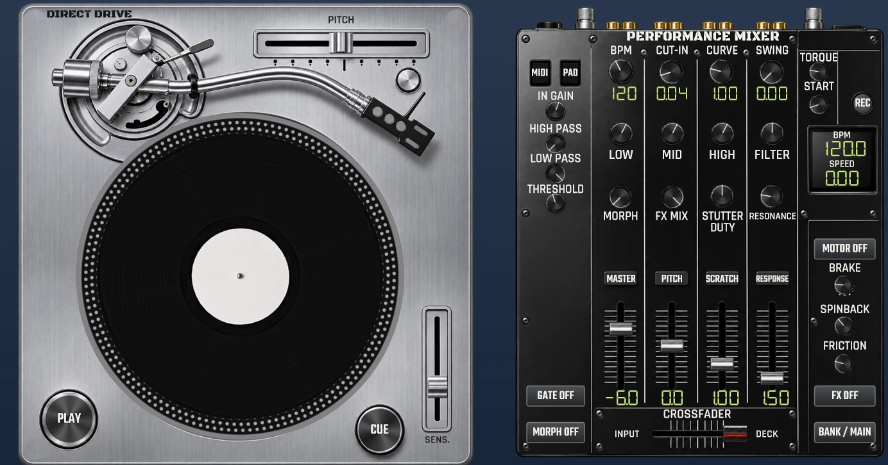
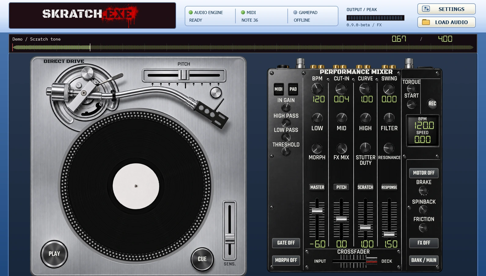

0.9.0-beta WINDOWS x64
SKRATCH.EXE
Vinyl scratching for FL Studio. Load a sample, move the record with your mouse or gamepad, and cut the sound with the crossfader.
Windows 10 / 11 · EXE 29.8 MB · ZIP 31.6 MB



01 / Install
Run the installer and choose your components. In FL Studio, open Options → Manage plugins and scan for plug-ins.
02 / FL Studio
Add Instrument to the Channel Rack to play from the Piano Roll. Add FX to the Mixer to scratch live input or a loaded sample.
03 / Scratch
Drag the record with the mouse or hold A / D. Hold J to cut the deck and press C to return to the cue point.
Connect
Open Input Mapping, press RESCAN, select your controller and turn on ENABLE GAMEPAD.
Sticks and triggers
With the default XInput mapping, move the left stick up or down to scratch and the right stick left or right to move the crossfader. LT slows down the scratch and RT speeds it up.
Calibrate
For PlayStation, Mobapad and other HID controllers detected by the plug-in, assign the axes manually and calibrate them with CAL CENTER, CAL MIN and CAL MAX.